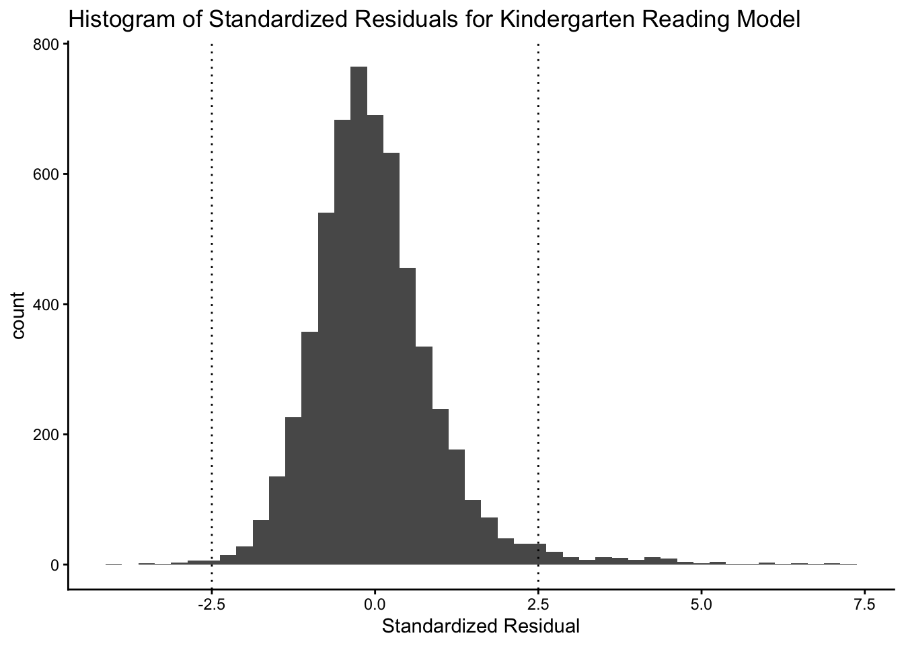
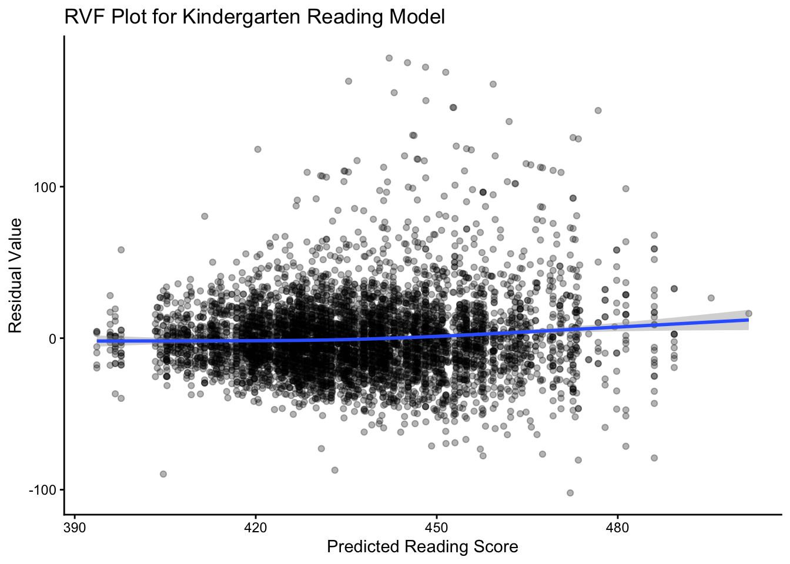
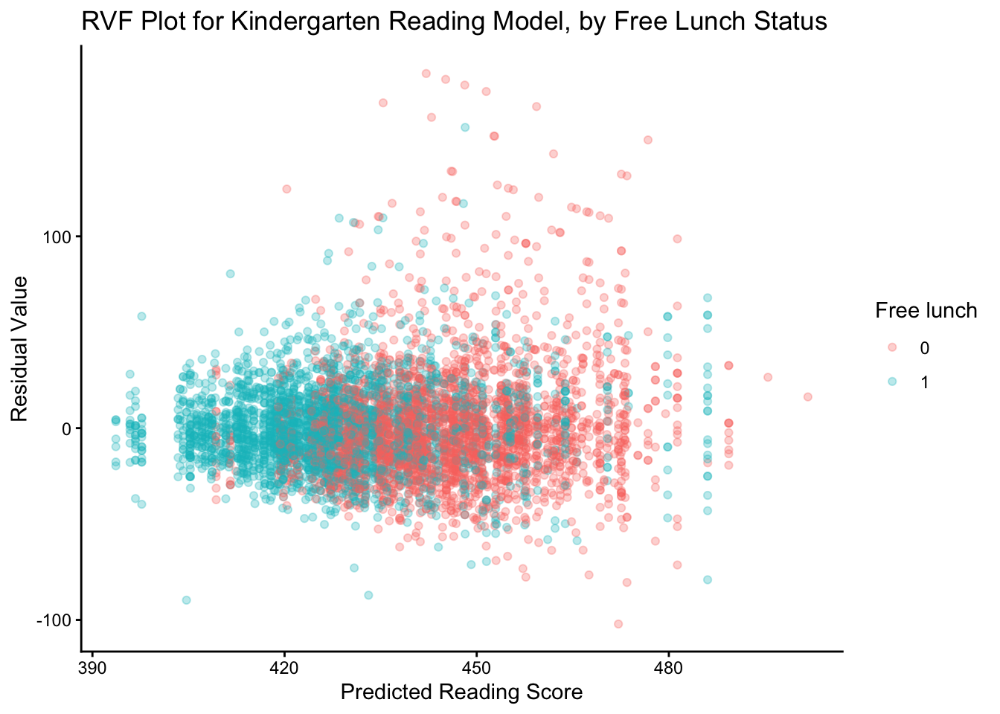
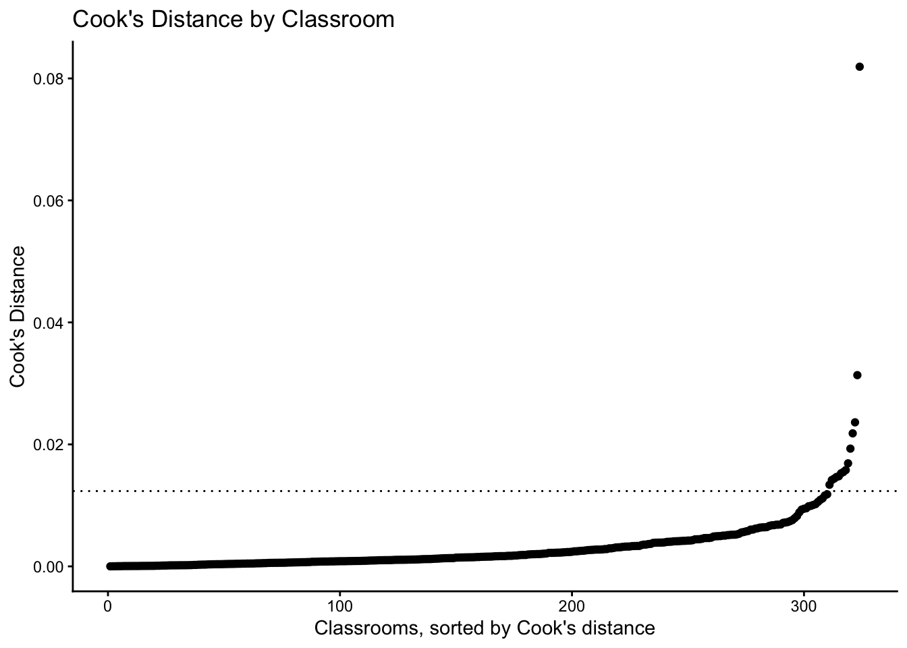

12 Checking Assumptions for MLMs
Data for this chapter: projectSTAR.dta
This week, we return to the kindergarten data from Project STAR, the Tennessee Class Size Experiment, which you first met in Chapter 7. Using a dataset you already know means the only new thing this week is the diagnostics.
Diagnostics are not a pass-fail checklist. They are evidence you weigh, and the useful question is never “was an assumption violated” but “is this violation bad enough to change what I conclude.” This chapter runs the standard checks and then does the thing that actually settles the question: refits the model under different assumptions and sees whether the answer moves.
12.1 Load in our MVP packages
lmerTest adds p-values to summary() output. We need them here, because the end of this chapter asks whether a result keeps its significance when the model is refit under different assumptions.
12.2 Part 1: loading in the data, and then recoding variables
12.2.1 Load in the data
projectSTAR <- haven::read_dta("projectSTAR.dta")You saw the full variable list in Chapter 7, so we go straight to cleaning.
12.2.2 Create a clean dataset ready for modeling
Rows: 5,751
Columns: 5
$ classid <dbl> 16928003, 21856202, 20549204, 25789904, 16117602, 18938204, …
$ read <dbl> 427, 450, 483, 456, 411, 443, 448, 463, 472, 428, 545, 408, …
$ classtype <fct> REGULAR + AIDE CLASS, REGULAR + AIDE CLASS, SMALL CLASS, REG…
$ frl <dbl> 0, 0, 1, 0, 0, 0, 1, 1, 0, 0, 0, 0, 0, 0, 1, 0, 0, 1, 0, 0, …
$ years_exp <dbl> 7, 8, 3, 12, 2, 7, 14, 4, 6, 11, 16, 12, 5, 17, 6, 10, 13, 9…Three of these deserve a note.
classtype has three levels: small class, regular class, and regular class with a full-time aide. By default R would use the first level, small class, as the reference category. relevel() makes regular class the reference instead, so the coefficient for small class is the class-size effect: how much higher small-class kindergartners scored than comparable children in regular classes.
gkfreelunch is coded 1 for free lunch and 2 for non-free lunch, the 1/2 coding Chapter 7 warned about. if_else() turns it into a 0/1 indicator where 1 means the child received free lunch, so its coefficient reads directly as the free-lunch gap.
drop_na() keeps only children with complete data on every variable in the model. lmer() would drop incomplete rows on its own, but doing it here means star.clean has exactly the rows the model uses. That matters later, when we remove whole classrooms and refit.
That leaves 5,751 kindergartners in 324 classrooms.
12.3 Part 2: the model under examination
Reading scores are the outcome, as they were in Chapter 7. The predictors are class type and teacher experience at the classroom level, and free lunch status at the student level.
Linear mixed model fit by maximum likelihood . t-tests use Satterthwaite's
method [lmerModLmerTest]
Formula: read ~ classtype + frl + years_exp + (1 | classid)
Data: star.clean
AIC BIC logLik -2*log(L) df.resid
54543.5 54590.1 -27264.7 54529.5 5744
Scaled residuals:
Min 1Q Median 3Q Max
-3.8923 -0.5938 -0.1077 0.4432 7.0465
Random effects:
Groups Name Variance Std.Dev.
classid (Intercept) 237.3 15.41
Residual 688.4 26.24
Number of obs: 5751, groups: classid, 324
Fixed effects:
Estimate Std. Error df t value Pr(>|t|)
(Intercept) 438.0800 2.2446 338.4612 195.174 < 2e-16
classtypeSMALL CLASS 5.7961 2.2407 324.3456 2.587 0.01012
classtypeREGULAR + AIDE CLASS 0.7676 2.3506 306.9082 0.327 0.74423
frl -15.6600 0.8236 5742.7291 -19.013 < 2e-16
years_exp 0.4775 0.1601 324.2245 2.983 0.00307
(Intercept) ***
classtypeSMALL CLASS *
classtypeREGULAR + AIDE CLASS
frl ***
years_exp **
---
Signif. codes: 0 '***' 0.001 '**' 0.01 '*' 0.05 '.' 0.1 ' ' 1
Correlation of Fixed Effects:
(Intr) cSMALC cRE+AC frl
cSMALLCLASS -0.548
cREGULAR+AC -0.489 0.521
frl -0.196 0.002 -0.011
years_exp -0.652 0.002 -0.046 0.034Small-class kindergartners scored about 5.8 points higher than children in regular classes (p = .010). Classes with an aide were no different from regular classes, children receiving free lunch scored about 15.7 points lower, and each additional year of teacher experience was worth about half a point.
Chapter 7 fit these data as a three-level model, with classrooms nested in schools. Here we use two levels, children within classrooms, so the diagnostics have one clustering variable to work with. Everything in this chapter extends to three levels, with one more set of random effects to check.
This is our “final” model, and everything that follows examines it rather than building further.
12.4 Use the augment function from the broom.mixed package
This gets predictions, residuals, and more.
library(broom.mixed)
diagnostics <- augment(model.read) %>%
mutate(.std_resid = as.numeric(scale(.resid)))augment() returns the data the model used plus a set of new columns whose names begin with a dot: .fitted, .resid, and others. The mutate() line adds one more, .std_resid, which is the residual standardized to a mean of zero and a standard deviation of one. Raw residuals are in the units of the outcome (reading scale score points here), so a residual of 2.5 means something different in every dataset. A standardized residual of 2.5 means the same thing everywhere: two and a half standard deviations from where the model expected.
12.5 Step 1: assess normality of residuals
12.5.1 Visually, with a histogram
ggplot(data = diagnostics, mapping = aes(x = .std_resid)) +
geom_histogram(binwidth = .25) + theme_classic() +
labs(title = "Histogram of Standardized Residuals for Kindergarten Reading Model",
x = "Standardized Residual") +
geom_vline(xintercept = c(-2.5, 2.5), linetype = "dotted")
The dotted reference lines mark ±2.5 standard deviations, a rough boundary beyond which residuals are worth a closer look. What you are checking for is severe skew, heavy tails, or obvious multimodality, not perfect symmetry.
This histogram is clearly right-skewed. The left tail stops at about −4, while the right tail stretches past +7. A small number of children read far above what the model predicts, and nobody reads correspondingly far below it.
[1] 137max(diagnostics$read)[1] 627# A tibble: 5 × 3
read .fitted .std_resid
<dbl> <dbl> <dbl>
1 627 442. 7.22
2 627 445. 7.10
3 627 448. 6.99
4 627 451. 6.86
5 605 435. 6.62137 children, about 2.4%, fall outside ±2.5, against a little over 1% expected under normality, and nearly all of them are in the right tail. The largest residuals belong to children who scored 627, the highest score in the data. These are not data errors. They are kindergartners who were already strong readers, and no model built on class type, free lunch, and teacher experience is going to predict them.
12.5.2 Statistically, with the Shapiro-Wilk test
shapiro.test() accepts between 3 and 5,000 observations and errors outside that range. We have 5,751, so we test a random sample of 5,000. set.seed() makes the sample, and therefore the result, reproducible.
set.seed(664)
shapiro.test(sample(diagnostics$.resid, 5000))
Shapiro-Wilk normality test
data: sample(diagnostics$.resid, 5000)
W = 0.91335, p-value < 2.2e-16Expect this to be significant, and do not make much of it. Shapiro-Wilk detects arbitrarily small departures from normality once the sample is reasonably large, and with thousands of observations it will reject for essentially any real dataset. Here the histogram already told us the skew is real, so the test adds nothing.
The histogram carries more information than the test. It is also worth remembering what this assumption buys: normality of residuals matters mainly for small-sample inference, and at these sample sizes the central limit theorem does most of the work regardless.
12.6 Step 2: use a residuals vs. fitted (RVF) plot to assess linearity and homoskedasticity
12.6.1 Basic RVF plot, without groups
ggplot(data = diagnostics, mapping = aes(x = .fitted, y = .resid)) +
geom_point(alpha = .3) + geom_smooth() +
labs(title = "RVF Plot for Kindergarten Reading Model",
x = "Predicted Reading Score",
y = "Residual Value") + theme_classic()
Read this plot for shape rather than for scatter. A fan or funnel means the residual variance depends on the fitted value, which is heteroskedasticity. A curve in the smoothed line means the relationship is not linear in the predictors as specified. An even, shapeless cloud around a flat line is what you want.
Be specific in your write-up about where in the fitted range any problem appears. A violation confined to a sparse tail is a different matter from one across the whole range. Here the cloud widens steadily from left to right, and the smoothed line drifts upward at the high end. Splitting the fitted values into quarters makes that concrete:
# A tibble: 4 × 4
fitted_quarter n mean_resid resid_sd
<int> <int> <dbl> <dbl>
1 1 1438 -1.25 17.8
2 2 1438 -1.54 22.1
3 3 1438 -0.261 27.6
4 4 1437 3.05 32.3The residual standard deviation nearly doubles, from about 18 points in the lowest quarter of predicted scores to about 32 in the highest. That is a real funnel, and it spans the whole fitted range rather than a sparse corner of it. The top quarter’s average residual is also about +3, which is the right skew from Step 1 showing up where predicted scores are highest. Heteroskedasticity does not bias the coefficients, but it does make the model-based standard errors untrustworthy, which is exactly what Step 4 addresses.
12.6.2 Same thing, but with added color by free lunch status
ggplot(data = diagnostics, mapping = aes(x = .fitted, y = .resid, color = factor(frl))) +
geom_point(alpha = .3) +
labs(title = "RVF Plot for Kindergarten Reading Model, by Free Lunch Status",
x = "Predicted Reading Score",
y = "Residual Value",
color = "Free lunch") + theme_classic()
Adding color turns a general diagnostic into a specific one. Children not receiving free lunch have higher predicted scores, so they sit toward the right of the plot, and they are also where most of the spread is.
# A tibble: 2 × 3
frl mean_fitted resid_sd
<dbl> <dbl> <dbl>
1 0 445. 28.9
2 1 428. 21.5The residual standard deviation is about 29 points for children not receiving free lunch and about 22 for those who are. Part of the funnel, then, is that reading skill varies more among more advantaged kindergartners. That is far more actionable than knowing the residuals are merely uneven, and it is a substantive finding in its own right.
12.7 Step 3: use Cook’s distance to identify influential classrooms
Cook’s distance asks how much the model’s coefficients would change if a piece of the data were removed. In a multilevel model, the natural piece to remove is a whole cluster. Our model estimates one intercept per classroom, and the question a skeptical reader asks is whether one or two unusual classrooms are steering the results, not whether one particular child is.
The influence.ME package answers this directly. It refits the model once for every classroom, leaving that classroom out each time, and records how far the fixed effects move.
library(influence.ME)
infl <- influence(model.read, group = "classid")
class_cooks <- tibble(classid = rownames(cooks.distance(infl)),
cooks_d = cooks.distance(infl)[, 1])With 324 classrooms this is 324 model fits, so expect it to take a minute or so.
n_classes <- n_distinct(star.clean$classid)
ggplot(data = class_cooks, mapping = aes(x = rank(cooks_d), y = cooks_d)) +
geom_point() + theme_classic() +
geom_hline(yintercept = 4/n_classes, linetype = "dotted") +
labs(title = "Cook's Distance by Classroom",
x = "Classrooms, sorted by Cook's distance", y = "Cook's Distance")
The reference line is the conventional cutoff, 4/J, where J is the number of clusters: here 4/324 = .012. It is a flag, not a verdict.
# A tibble: 14 × 2
classid cooks_d
<chr> <dbl>
1 24478001 0.0819
2 24475507 0.0314
3 12807903 0.0236
4 20549202 0.0218
5 17331203 0.0193
6 24477401 0.0169
7 24480602 0.0158
8 15917105 0.0155
9 17632901 0.0153
10 17331201 0.0148
11 24480604 0.0147
12 24483903 0.0144
13 22157103 0.0142
14 21653604 0.0134Fourteen classrooms cross the line, and one is in a category of its own: classroom 24478001, with a Cook’s distance of .081, more than twice the next largest. Before doing anything about it, look at it.
# A tibble: 1 × 6
classid n mean_read prop_frl years_exp classtype
<dbl> <int> <dbl> <dbl> <dbl> <fct>
1 24478001 22 494. 0.955 24 REGULAR + AIDE CLASS# A tibble: 1 × 3
mean_read prop_frl mean_years_exp
<dbl> <dbl> <dbl>
1 437. 0.483 9.31This is the highest-scoring classroom in the study, with an average of 494 against an overall mean of about 437. Nearly every child in it received free lunch, and its teacher had 24 years of experience, close to the maximum in the data. That combination is why it has so much influence. The model expects a classroom of mostly free-lunch children to score below average, so this classroom pulls hard on the free-lunch coefficient, and its very experienced teacher pulls on the experience slope as well.
It is not a data error. It is a remarkable classroom, and arguably the most interesting one in the dataset.
That is the general lesson. When a case is flagged, look at it before doing anything. A cluster with an impossible value is a data error and should be fixed or removed. A cluster that is simply unusual is data. Deleting inconvenient observations because a statistic flagged them is not a diagnostic procedure; it is a way of guaranteeing the result you already wanted. What we do instead, in Step 5, is refit without the flagged classrooms as a check, and see whether anything important changes.
augment() also returns a .cooksd column, one value per child, and in ordinary regression the usual cutoff for it is 4/n. That cutoff does not carry over to lmer models. The leverage values behind .cooksd include each child’s pull on their own classroom’s random intercept, so they run far larger than in OLS, and so do the Cook’s distances. Applied to this model, 4/5,751 flags almost three-quarters of all children:
A “flag” that catches most of the data has stopped flagging anything. Cluster-level Cook’s distance with 4/J avoids the problem and asks the more useful question anyway.
12.8 Step 4: re-run the model with cluster-robust standard errors
The funnel in Step 2 tells us the model-based standard errors may be too optimistic. Cluster-robust standard errors estimate the uncertainty from the data’s actual spread within and between classrooms, without assuming the residual variance is constant. The clubSandwich package computes them, and its CR2 version includes a small-sample correction.
library(clubSandwich)
coef_test(model.read, vcov = "CR2")Alternative hypothesis: two-sided
Coef. Estimate SE Null value t-stat d.f. (Satt)
(Intercept) 438.080 2.291 0 191.249 116
classtypeSMALL CLASS 5.796 2.306 0 2.513 213
classtypeREGULAR + AIDE CLASS 0.768 2.277 0 0.337 194
frl -15.660 0.860 0 -18.201 268
years_exp 0.477 0.174 0 2.746 116
p-val (Satt) Sig.
<0.001 ***
0.0127 *
0.7364
<0.001 ***
0.0070 **The coefficients are identical to model.read; only the standard errors, degrees of freedom, and p-values change. Compare them with the summary(model.read) output above. Here the changes are small. The small-class standard error goes from 2.24 to 2.31, and its p-value from .010 to .013. Every coefficient that was significant under the model-based standard errors is still significant. With 324 classrooms, the model-based standard errors were already close to right, despite the funnel.
12.9 Step 5: re-run the model with the influential classrooms removed
Linear mixed model fit by maximum likelihood . t-tests use Satterthwaite's
method [lmerModLmerTest]
Formula: read ~ classtype + frl + years_exp + (1 | classid)
Data: star.trimmed
AIC BIC logLik -2*log(L) df.resid
51911.4 51957.7 -25948.7 51897.4 5485
Scaled residuals:
Min 1Q Median 3Q Max
-3.8766 -0.5975 -0.1121 0.4330 7.0950
Random effects:
Groups Name Variance Std.Dev.
classid (Intercept) 171.2 13.08
Residual 676.4 26.01
Number of obs: 5492, groups: classid, 310
Fixed effects:
Estimate Std. Error df t value Pr(>|t|)
(Intercept) 437.4199 2.0104 323.5315 217.580 < 2e-16
classtypeSMALL CLASS 5.6305 2.0001 308.0942 2.815 0.00519
classtypeREGULAR + AIDE CLASS 0.1721 2.0897 286.9326 0.082 0.93443
frl -15.8921 0.8251 5429.3970 -19.261 < 2e-16
years_exp 0.4360 0.1459 308.1169 2.988 0.00303
(Intercept) ***
classtypeSMALL CLASS **
classtypeREGULAR + AIDE CLASS
frl ***
years_exp **
---
Signif. codes: 0 '***' 0.001 '**' 0.01 '*' 0.05 '.' 0.1 ' ' 1
Correlation of Fixed Effects:
(Intr) cSMALC cRE+AC frl
cSMALLCLASS -0.536
cREGULAR+AC -0.487 0.522
frl -0.215 -0.001 -0.011
years_exp -0.651 -0.010 -0.047 0.037Because we are removing whole classrooms, the filtering happens on star.clean.
Reporting how much data came out is not optional. A reader needs to know whether the robustness check dropped three cases or three hundred. Here it is 14 of 324 classrooms, 259 of 5,751 children.
12.10 Step 6: compare the original model, the cluster-robust version, and the trimmed model
This is the sensitivity analysis. To see all three side by side, we pull the fixed effects from each into one data frame, then spread them into columns.
compare <- bind_rows(
tidy(model.read, effects = "fixed") %>%
transmute(term, estimate, std.error, p.value, model = "Original"),
coef_test(model.read, vcov = "CR2") %>%
as_tibble() %>%
transmute(term = Coef, estimate = beta, std.error = SE, p.value = p_Satt,
model = "Cluster-robust SEs"),
tidy(model.trimmed, effects = "fixed") %>%
transmute(term, estimate, std.error, p.value, model = "Influential classrooms removed")
) %>%
mutate(cell = paste0(sprintf("%.2f", estimate), " (", sprintf("%.2f", std.error), ")",
if_else(p.value < .05, "*", ""))) %>%
select(term, model, cell) %>%
pivot_wider(names_from = model, values_from = cell)
knitr::kable(compare, caption = "Estimate (SE); * p < .05")| term | Original | Cluster-robust SEs | Influential classrooms removed |
|---|---|---|---|
| (Intercept) | 438.08 (2.24)* | 438.08 (2.29)* | 437.42 (2.01)* |
| classtypeSMALL CLASS | 5.80 (2.24)* | 5.80 (2.31)* | 5.63 (2.00)* |
| classtypeREGULAR + AIDE CLASS | 0.77 (2.35) | 0.77 (2.28) | 0.17 (2.09) |
| frl | -15.66 (0.82)* | -15.66 (0.86)* | -15.89 (0.83)* |
| years_exp | 0.48 (0.16)* | 0.48 (0.17)* | 0.44 (0.15)* |
tidy() and coef_test() return their results with different column names, so the transmute() lines rename them to match before stacking. The rest is formatting.
This is the part that actually settles the question. Rather than arguing about whether assumptions hold, refit under different assumptions and compare.
Read across the columns for the coefficient you care about most, which here is the small-class effect. It is 5.80 in the original model, the same with cluster-robust standard errors, and 5.63 with the 14 influential classrooms removed. It is significant in all three. The free-lunch gap and the teacher experience slope behave the same way. When a coefficient holds steady in magnitude, direction, and significance like this, you have an answer to the reviewer worried about your residuals: the conclusion does not depend on the assumption in question. That is a much stronger response than asserting the assumption was met.
12.11 Writing it up
A sensitivity analysis paragraph belongs in nearly every quantitative paper, and it has a predictable shape. State which diagnostics you examined. Report what they showed, honestly, including the parts that looked imperfect. Describe the robustness checks you ran. Then state whether your substantive conclusion held.
The version that reads as defensive says the assumptions were met and moves on. The version that reads as competent concedes that the residuals were right-skewed and grew more variable at higher predicted scores, and that 14 classrooms exceeded the conventional cluster-level Cook’s distance threshold. It then reports that the small-class effect was essentially unchanged with cluster-robust standard errors (b = 5.80, p = .013) and with those classrooms excluded (b = 5.63, p = .005). The second is more honest and considerably more persuasive.
12.12 A note on your content review
Your Module 10 content review uses the same Project STAR data, but asks about math rather than reading, with a different set of predictors. The steps are the same: standardized residuals and a histogram, Shapiro-Wilk with a sense of proportion, an RVF plot, Cook’s distance at the classroom level with the 4/J cutoff, cluster-robust standard errors with clubSandwich, a trimmed model, and one table that puts all three side by side. The answer, though, is yours to find. Do not assume your robustness checks will come out as cleanly as these did.